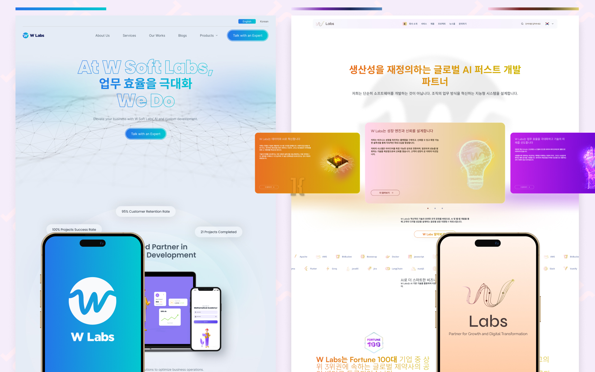
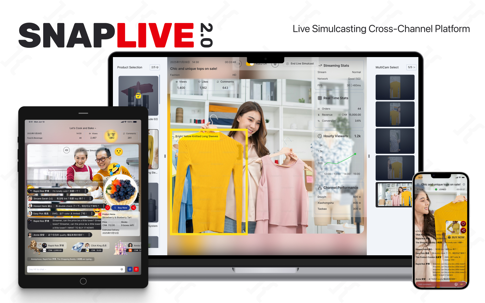
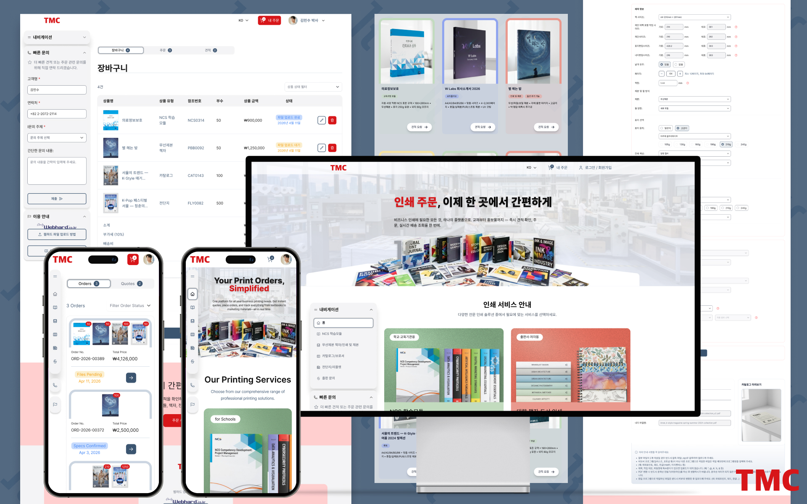
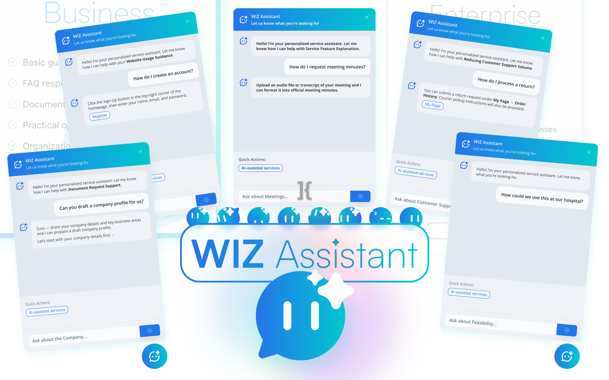
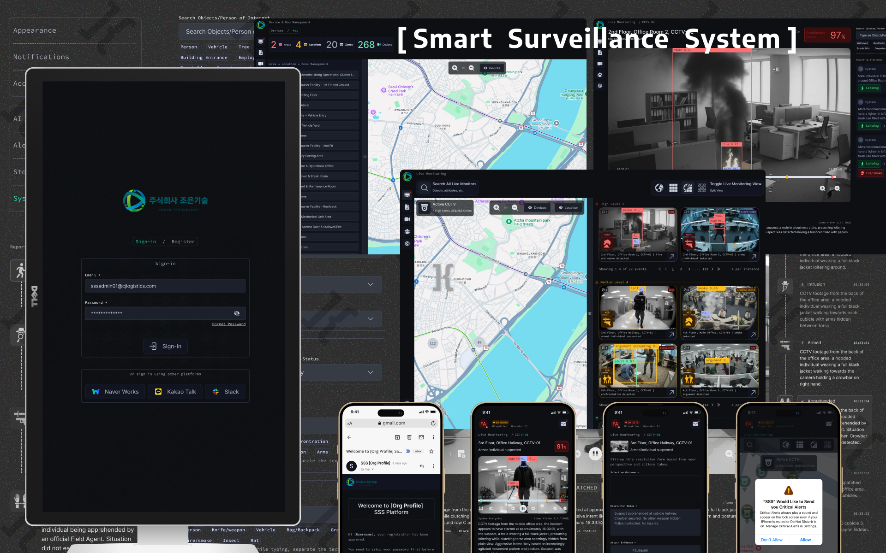
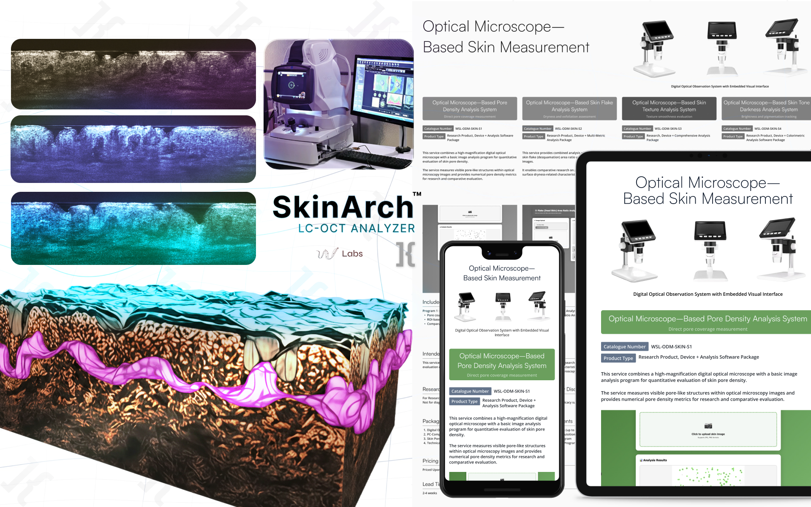

W Labs Brand & Website Revamp
We wanted to modernize and add AI influence to our brand as we utilize AI in most of our services including overhaul of our website.
View Project →
Senior UI/UX Design Developer based in Laguna, Philippines —
specializing in UI/UX, brand identity, and enhancing digital experiences aligned to business goals.
I am a Senior UI/UX Design Developer who had experience in Strategic Marketing and Branding, Print and Web Media, and Web Development. I’m passionate in streamlining and enhancing processes, technical workflow, and the overall digital product development lifecycle in order to cut costs while optimizing profits, and grow alongside our clients.
I believe in utilizing AI as a team mate to assist with research and processes, technical design and deployment, as well as understanding of the target niche’s psychology and behavior, allowing me to provide the best solutions clients would need.
I am a decision-maker aiming for an opportunity to fully lead a team, direct the visuals, and layout a roadmap of any project from design → delivery/deployment → reiteration and escalation.

Every project follows a deliberate pace — from diagnosing the real problem to shipping something that holds up. Here's how I move.

I start by digging into the actual business problem — not just the brief. Who are the users, what are the stakeholder goals, and where do they conflict? I don't open Figma until I know what I'm solving for.

Once the problem is clear, I map out user flows, information architecture, and success criteria. This is where I set the guardrails — what done looks like, what trade-offs are acceptable, and what the roadmap should prioritize.

Systematic, component-driven visual and interaction design in Figma. I think in systems — not screens. Every decision has a reason: spacing, hierarchy, color, motion. Nothing arbitrary.

I bridge the gap between design and development. HTML, CSS, and JavaScript — with AI as a teammate where it adds speed without sacrificing quality. I know enough about the build to catch what breaks in production before it ships.

Deploy, QA, document. Whether it's a clean Figma handoff to a dev team or a direct Vercel deployment, I make sure what launches matches what was designed — and that whoever touches it next can understand it.

The work doesn't end at launch. I treat post-release feedback, usage data, and client input as part of the design process — refining, escalating, and building on what shipped until the product is genuinely better.

We wanted to modernize and add AI influence to our brand as we utilize AI in most of our services including overhaul of our website.
View Project →
We made a live simulcasting platform using RTMP & WebRTC for live-selling on Chinese marketplaces such as Douyin, Xiaohongshu, and Taobao Live.
View Project →
Overhauled a Korean printing company's website to simplify their online workflow aligned with their business goals allowing them to quote better and verify customer print files faster.
View Project →
An AI-powered interactive guide to aid customers in engaging with the client's web platform.
View Project →
An alert-based security progressive web app aiding organizations in maintaining CCTV surveillance and managing their security officers as well.
View Project →
Specialized AI-software for skin clinics that measures and analyzes skin health using real-time "optical biopsy" technology.
View Project →A few questions worth answering — on design, process, and where I'm headed.
Open to freelance, collaborations, and full-time opportunities.
karlmiguerez@gmail.com